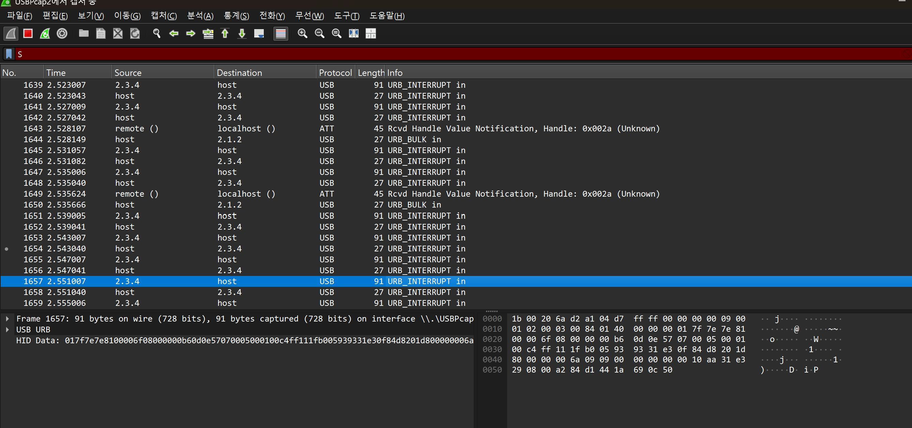
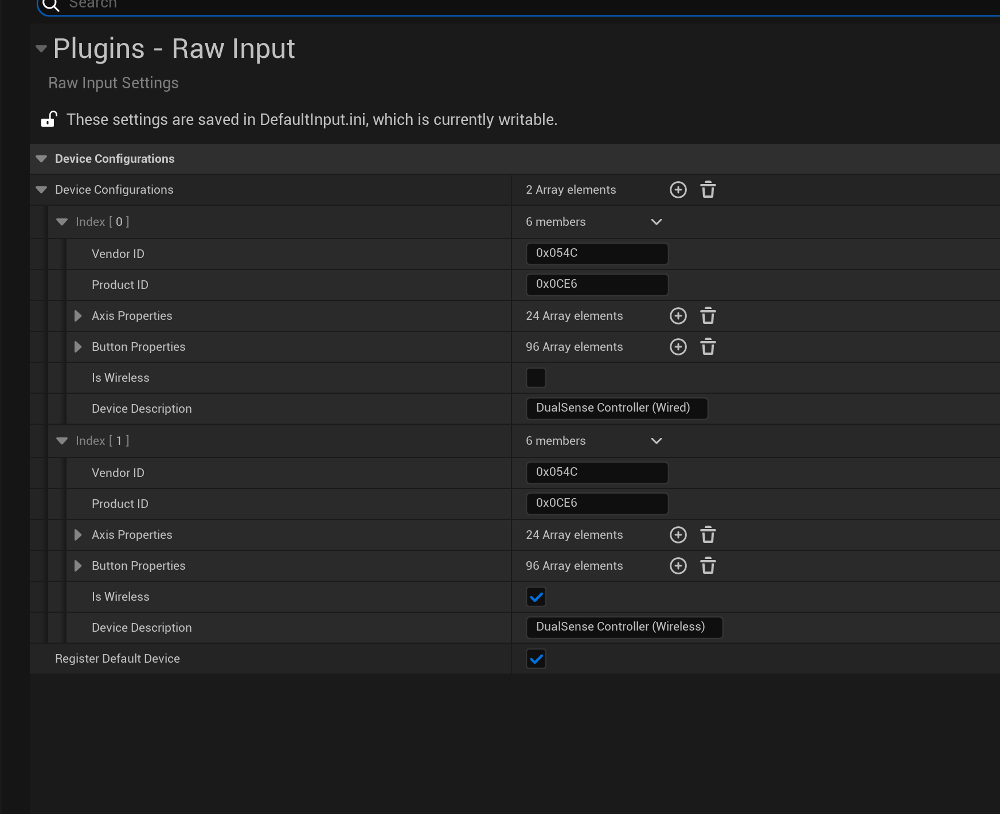

최성락
게임 클라이언트 개발자
충돌을 두려워하지 않고 더 단단해지기 위해 노력하겠습니다.
담금질 될 준비가 된 게임 클라이언트 개발자 최성락입니다.
게임 클라이언트 개발자
충돌을 두려워하지 않고 더 단단해지기 위해 노력하겠습니다.
담금질 될 준비가 된 게임 클라이언트 개발자 최성락입니다.

Human Fall Flat과 같이 협동을 하여 진행하는 간단한 멀티플레이 프로토타입입니다.
게임 플레이 서버와 별개로 채팅 전용 서버를 분리해, 모듈화했습니다.
팀 구성: 2명 (언리얼 개발자 2명)
Unreal Engine의 RPC 시스템을 통해 채팅 기능을 구현할 경우, 게임 플레이 로직과 동일한 서버에서 채팅이 처리되기 때문에 게임 서버 부하 증가 및 확장성에 제한이 발생합니다.
추후 고려 가능한 기능인 1대 1 채팅, 대화 로그 저장 등을 고려하면 Unreal Server가 너무 많은 역할을 담당하게 되어 유지보수에서 불리합니다.
채팅 전용 서버를 구성하고, 게임 로직과는 별도로 통신하도록 구조를 분리했습니다. Windows에서는 Winsock2를 학습하여 적용하고, Select를 이용한 멀티플렉싱 방식으로 다중 클라이언트를 구현했습니다.

게임 서버와 채팅 서버를 분리하여 각각의 역할을 명확히 하고, 제한된 시간과 리소스 내에서 안정적인 크로스 플랫폼 지원을 확보했습니다. Unreal Engine에서 제공하는 FSocket을 활용해 플랫폼별 구현이 내부적으로 추상화되어 동일한 네트워크 코드를 유지할 수 있었습니다.
// IModuleInterface* NewModule = LoadSubsystemModule(SubsystemName.ToString());
this->SocketSubsystem = ISocketSubsystem::Get(PLATFORM_SOCKETSUBSYSTEM);
////////////////////////////////////////////////////////////////////
#ifndef PLATFORM_SOCKETSUBSYSTEM
#if PLATFORM_WINDOWS
#define PLATFORM_SOCKETSUBSYSTEM FName(TEXT("WINDOWS"))
#elif PLATFORM_MAC
#define PLATFORM_SOCKETSUBSYSTEM FName(TEXT("MAC"))
#elif PLATFORM_IOSUnreal Engine 클라이언트에서는 OS 레벨의 소켓 API 대신 엔진에서 제공하는 FSocket을 사용했습니다. FSocket은 Socket Subsystem을 통해 Windows에서는 Winsock, Mac과 Linux에서는 BSD Socket을 사용하도록 플랫폼별 구현이 내부적으로 추상화되어 있어, 크로스 플랫폼 지원을 효율적으로 확보할 수 있었습니다.

FSocket 구현을 분석하던 중 Doxygen 주석을 알게 되었습니다. 프로젝트 전반에 Doxygen 스타일 주석을 적용하여 클래스와 함수 단위로 정리했으며, 그 결과 코드 리뷰와 구조 파악 시 빠르게 이해할 수 있어 유지보수성과 가독성을 향상시킬 수 있었습니다.
while (this->_isRunning)
{
this->_selectManager.setupFdSet();
this->_selectManager.addSocket(this->_tcpSocket.getSocket());
SOCKET client_sockets[ClientManager::MAX_CLIENTS];
int socket_count = _clientManager.getAllSockets(client_sockets, ClientManager::MAX_CLIENTS);
for (int i = 0; i < socket_count; ++i)
this->_selectManager.addSocket(client_sockets[i]);
...매 루프마다 fd_set을 초기화하고, 서버 소켓 + 모든 클라 소켓을 한 곳에 등록합니다.
ClientManager로 소켓 수집을 분리해, 모듈화했습니다.
SelectManager::Result select_result = this->_selectManager.executeSelect(1);
...
// TIMEOUT이면 continue, 에러면 루프 종료/리턴, SUCCESS면 아래 ready 처리로 진행
...select()는 준비된 소켓이 있을 때만 다음 처리로 넘어갑니다.
TIMEOUT/FAIL/SUCCESS로 상태 관리를 명확히 두었습니다.
if (this->_selectManager.isSocketReady(this->_tcpSocket.getSocket()))
this->handleNewConnection();
for (int i = 0; i < ClientManager::MAX_CLIENTS; ++i)
{
SOCKET client_socket = this->_clientManager.getClientSocket(i);
if (client_socket != INVALID_SOCKET && this->_selectManager.isSocketReady(client_socket))
if (this->handleClientMessage(i) == false)
{ this->announceLeave(i); this->_clientManager.removeClient(i); }
}
}서버 소켓이 ready면 accept, 클라 소켓이 ready면 recv 처리합니다.
It Takes Two의 오두막 챕터 공구통 보스전 구간을 재현했습니다. 협동 플레이의 조작감과 화면 UX를 Unreal C++로 구현했습니다.
팀 구성: 5명 (언리얼 개발자 3명, 기획자 1명, TA 1명)
원작을 분석한 결과, 걷기 중 점프와 제자리 점프에서 앞으로 가는 힘의 크기가 다르고, 같은 방향키를 눌러도 현재 상태에 따라 캐릭터의 반응이 달라지는 것을 확인했습니다. 초기에는 조건문으로 이를 구현하려 했으나, 상태 조합이 늘어날수록 코드 복잡도가 급격히 증가했습니다.
모든 상태 전이를 if-else로 처리하면 케이스마다 예외 처리가 필요했고, 새로운 상태 추가 시 기존 코드를 모두 검토해야 하는 문제가 있었습니다. 알고리즘 문제 풀이에서 비트마스킹으로 상태 조합을 효율적으로 다룬 경험을 떠올려, 상태를 플래그로 관리하면 중첩 케이스를 체계적으로 정리할 수 있다고 판단했습니다.
캐릭터 상태 관리 컴포넌트를 구현하고, 각 상태를 비트 플래그로 정의했습니다. OR 연산으로 상태를 중첩시키고, AND 연산으로 특정 상태 조합을 검사하는 방식으로 전이 규칙을 단순화했습니다. 또한 특정 상태에서 행동을 제한하거나 강제하는 규칙을 컴포넌트 내부에 캡슐화했습니다.
상태 중첩을 자료구조 수준에서 처리해 분기문을 대폭 줄였고, 모든 상태 전이 규칙을 한 곳에서 관리할 수 있게 되었습니다. 새로운 상태를 추가할 때도 비트 플래그만 정의하면 되어 확장성이 크게 향상되었습니다.
패드 스틱은 360도 연속 입력이 가능하지만, 원작은 8방향으로만 이동합니다. 단순히 각도를 45도씩 나누는 방식은 경계값 처리가 불안정했습니다.
입력 벡터를 가장 가까운 8개 방향축 중 하나로 투영하는 방식이 필요했습니다. 이전에 동료와 탱크 시뮬레이션을 만들 때 AI 탱크가 플레이어가 자기 앞에 있는지 뒤에 있는지 판단하는 로직을 구현하면서 내적을 활용한 경험이 있었고, 이를 응용하면 8방향 중 최적 방향을 수학적으로 명확히 결정할 수 있다고 생각했습니다.
8개의 단위 방향 벡터를 미리 정의하고, 입력 벡터와 각각 내적 연산을 수행했습니다. 내적값이 가장 큰 방향을 최종 이동 방향으로 선택하는 방식으로 구현했습니다.
입력이 항상 8개 방향 중 하나로 안정적으로 정리되어, 원작과 유사한 명확한 이동 감각을 구현할 수 있었습니다.
bool UCSR_P_AComp_CharicStateMannage::AddState(int32 NewState)
{
if (this->TotalControlState(NewState))
{
this->CurrentState = this->CurrentState | NewState;
UE_LOG(LogTemp, Warning, TEXT("%d %d"), this->CurrentState, NewState);
this->SpendStateToAnim();
return (true);
}
return (false);
}
bool UCSR_P_AComp_CharicStateMannage::CanAddJumpMove()
{
if (this->CurrentState & (DIE | REBORN | PRESS | ATTACK | AIRSIT | MOVE))
{
return false;
}
if (this->CurrentState & JUMP)
{
return true;
}
return false;
}AddState()에서 상태를 OR로 중첩시키고, 진입 가능 여부는 TotalControlState()로 단일 게이트에서 판단합니다.
CanAddJumpMove() 처럼 금지 상태를 비트마스크 방식으로 체크합니다.
결과적으로 상태 중첩에서 케이스 분기 복잡도를 줄이고 확장성에 기여합니다.
// 패드의 방향이 8방향 중 어느곳에 더 가까운지를 판단합니다.
int32 UCSR_P_AComp_CharicMovement::ChooseDirectionFlag(FVector2D& PadDirection_)
{
// 전역 게임 인스턴스에서 8방향 배열을 가져옵니다.
UCSR_Direction_GameInstance* GameInstance = Cast(
UGameplayStatics::GetGameInstance(this->GetWorld())
);
const TArray& Directions = GameInstance->Directions;
float RelativeDValue = -1;
int32 flag = 0;
int32 answer = 0;
for (FVector2D param : Directions)
{
flag = flag + 1;
float CalcDot = FVector2D::DotProduct(PadDirection_, param);
if (CalcDot > RelativeDValue)
{
answer = flag;
RelativeDValue = CalcDot;
}
}
return (answer);
} 8방향 축과 입력 벡터의 내적을 계산해, 가장 큰 내적 값을 갖는 방향을 선택합니다.
결과적으로 무한한 입력을 8방향으로 고정시켜 이동 조작감을 재현합니다.
Windows 환경에서 Unreal Engine이 유선 PlayStation 컨트롤러 DualSense의 입력을 받을 수 있도록 RawInput 플러그인을 분석하고, 누락된 D-pad 입력 처리를 직접 구현했습니다.
팀 구성: 1명 (개인 프로젝트)
Windows는 PlayStation 전용 API를 제공하지 않아 DirectInput이나 RawInput으로 입력을 처리해야 하는데, Unreal Engine은 기본적으로 PlayStation 컨트롤러를 즉시 사용하기 어려웠습니다. RawInput 플러그인이 HID Report 매핑을 지원하긴 하지만, PlayStation 컨트롤러는 Unreal이 기대하는 표준 매핑과 달라서 D-pad 입력이 처리되지 않았습니다. DS4Windows나 Steam 같은 외부 프로그램으로 우회할 수 있지만, 외부 도구 없이 Unreal 내부에서 해결하고자 했습니다.
Wireshark로 원시 HID Report 데이터를 캡처해 분석한 결과, D-pad 입력 시 9번째 바이트의 값이 변화하는 것을 확인했습니다.
RawInput 플러그인 코드를 확인해보니 9번째 바이트에 대한 D-pad 해석 로직이 없었습니다. 이 바이트 값을 어떻게 버튼 상태로 변환할지 직접 구현이 필요했습니다.
RawInput 설정에 DualSense 장치 정보를 등록해 HID Report를 받을 수 있도록 했습니다.
RawInputWindows.cpp에서 ReportPtr[8], 즉 9번째 바이트의 값을 읽고, 8방향과 중립을 포함한 D-pad 입력을 Up, Down, Left, Right 4개 버튼 상태로 변환해 ButtonData 배열에 매핑했습니다. 입력 상태 변경은 bNeedsUpdate 플래그로 표시해서 엔진의 입력 업데이트 흐름에 반영되도록 처리했습니다.
유선 연결 기준으로 DualSense D-pad 입력이 Unreal 내부 입력 시스템으로 정상 전달되도록 개선했습니다. 왜 작동하지 않는지 추측으로 끝내지 않고, 원시 HID Report부터 플러그인 내부까지 추적해서 누락된 부분을 찾아냈고, 이를 직접 구현해서 해결했습니다.
if (ReportPtr[0] == 0x01 && InRawInputDataBuffer->data.hid.dwSizeHid > 8)
{
uint8 dpadValue = ReportPtr[8] & 0x0F;
UE_LOG(LogRawInputWindows, Warning, TEXT("DualSense D-pad value: %d"), dpadValue);
bool isDpadUp = (dpadValue == 0 || dpadValue == 1 || dpadValue == 7);
bool isDpadRight = (dpadValue == 1 || dpadValue == 2 || dpadValue == 3);
bool isDpadDown = (dpadValue == 3 || dpadValue == 4 || dpadValue == 5);
bool isDpadLeft = (dpadValue == 5 || dpadValue == 6 || dpadValue == 7);
const int32 DpadUpIndex = 11;
const int32 DpadRightIndex = 12;
const int32 DpadDownIndex = 13;
const int32 DpadLeftIndex = 14;
if (DpadUpIndex < DeviceEntry->ButtonData.Num())
DeviceEntry->ButtonData[DpadUpIndex].bButtonState = isDpadUp;
...
DeviceEntry->bNeedsUpdate = true;
}Wireshark로 확인한 D-pad 값의 위치인 9번째 바이트를 ReportPtr[8]에서 읽어 하위 4비트로 방향 값을 추출합니다.
이 값을 Up, Down, Left, Right 4개 버튼 상태로 변환해 Unreal의 버튼 입력 모델에 맞추고, bNeedsUpdate를 설정해 입력 변경이 플러그인의 업데이트 흐름에 반영되도록 합니다.
상용 게임 엔진(Unreal)의 핵심 아키텍처를 이해하기 위해 Windows 콘솔 환경에서 Input → Update → Render → Present 루프를 직접 구현했습니다. Level-Actor 구조와 생명주기 관리를 통해 엔진의 기본 설계 원리를 학습했으며, 구현한 프레임워크 위에 A* 경로탐색 시뮬레이터를 제작해 실용성을 검증했습니다.
팀 구성: 1명 (개인 프로젝트)
커서 기반 출력은 출력 순서가 불안정하고, 프레임 단위로 렌더링 흐름을 제어하기 어려웠습니다. 화면이 깜빡이고 잔상이 남는 문제가 발생했습니다.
화면을 완성하기 전에 부분적으로 출력하면 깜빡임과 잔상이 반복됩니다. 버퍼링 없이 직접 출력하는 방식은 화면을 그리는 작업과 화면에 보여주는 작업을 나누기 어려웠습니다.
ScreenBuffer를 만들어서 화면을 버퍼에 먼저 그린 뒤 한 번에 출력하는 방식으로 바꿨습니다. 이렇게 하니 그리는 작업과 출력하는 작업을 확실히 나눌 수 있었습니다.
화면 갱신이 안정화되었고, 엔진 루프에서 Render와 Present 단계가 명확히 구분되어 Unreal Engine의 렌더링 파이프라인 개념을 이해하는 데 도움이 되었습니다.
Update/Draw 순회 중 Actor가 추가되거나 삭제되면 컨테이너 참조가 깨지고 크래시가 발생했습니다.
Actor 생명주기 정리가 여러 위치에 흩어져 있으면 타이밍을 예측하기 어렵습니다. 순회 중 컨테이너 변경은 반복자 무효화를 일으킵니다.
Unreal의 Deferred Destroy 패턴을 참고하여, Destroy() 호출 시 즉시 삭제하지 않고 만료 표시만 남기고, 실제 정리는 프레임 끝 한 지점(ProcessAddedAndDestroyedActor)에서만 처리하도록 규칙을 고정했습니다.
Update/Draw 순회가 안정화되었고, 추가 기능이 늘어나도 정리 타이밍이 흔들리지 않습니다. Unreal Engine이 왜 PendingKill 개념을 사용하는지 이해할 수 있었습니다.
보드 전체를 매 프레임 다시 그리는 방식은 보드 크기가 커질수록 비효율적이었습니다.
A* 시뮬레이션에서 프레임마다 변하는 셀은 일부인데, 전체를 다시 그리는 구조였습니다.
변경된 셀만 Dirty로 표시하고, Dirty 셀만 다시 그리도록 변경했습니다. 평균 갱신 셀 수를 화면에 표시해 최적화 효과를 확인했습니다.
매 프레임 전체 갱신에서 변경 영역만 갱신하는 방식으로 전환하여 렌더링 비용을 크게 절감했습니다. 시뮬레이션 단계가 길어져도 출력 비용이 급증하지 않습니다.
while (true)
{
if (quit) break;
QueryPerformanceCounter(&time);
currentTime = time.QuadPart;
float deltaTime = float(currentTime - previousTime) / float(frequency.QuadPart);
if (deltaTime >= targetOneFrameTime)
{
ProcessInput();
Update(deltaTime);
Draw();
SavePreviouseKeyStates();
previousTime = currentTime;
if (mainLevel) mainLevel->ProcessAddedAndDestroyedActor();
}
}프레임 끝에서만 Actor 정리를 수행하는 안전 지점을 엔진 루프에 고정했습니다.
Update/Draw 순회 안정성이 확보되며, Unreal Engine의 틱 시스템과 유사한 구조를 구현했습니다.
if (dirtyControl_)
{
for (int y = 0; y < mapInfo_.vertical_; ++y)
{
for (int x = 0; x < mapInfo_.horizontal_; ++x)
{
if (!dirtyCheckBoard_[y][x]) continue;
char c = mapInfo_.map_[y][x];
Color cColor = Color::White;
switch (c)
{
case GameObj::wall: cColor = Color::Red; break;
case GameObj::empty: cColor = Color::Black; break;
default: break;
}
char str[2] = { c, 0 };
Engine::Get().Draw(Vector2(x, y), str, cColor);
dirtyCheckBoard_[y][x] = false;
}
}
}
dirtyControl_ = false;렌더링 비용이 보드 크기보다 변경량에 비례하도록 구조를 개선했습니다.
변경된 셀만 갱신하여 불필요한 렌더링을 제거했습니다.
42Seoul 과제로 진행한 레이캐스팅 기반 3D 렌더링 프로젝트.
2D 격자 맵을 DDA 알고리즘으로 탐색하여 1인칭 시점 화면을 구현하며, 저수준 그래픽 프로그래밍과 수학적 렌더링 원리를 학습.
팀 구성: 2명
시야각에 따라 DDA가 같은 칸을 반복하며 무한 루프에 빠짐
광선 방향으로 step을 먼저 확정하고, first_dist를 정확히 초기화. 더 가까운 축부터 한 칸씩 이동하도록 루프 고정
모든 각도에서 첫 충돌 지점을 안정적으로 탐색
광선 길이로 벽 높이를 계산하면 화면 가장자리에서 거리가 과장됨
카메라 화면 평면에 수직인 거리 값으로 벽 높이를 계산하도록 변경
회전 중에도 벽 높이가 일정하게 유지되어 왜곡 제거
타일 단위로 매 프레임 다시 그리면 불필요한 픽셀 연산 누적
배경은 구역별 이미지로 미리 생성, 플레이어 위치만 갱신
미니맵을 켠 상태에서도 프레임 안정성 유지
void ray_casting(t_map *map, t_detail_info *info)
{
while (info->hit == 0)
{
if (info->first_dist_x < info->first_dist_y)
{
info->first_dist_x += info->squ_per_dist_x;
info->map_x += info->step_x;
info->side = 0;
}
else
{
info->first_dist_y += info->squ_per_dist_y;
info->map_y += info->step_y;
info->side = 1;
}
if (map->map[info->map_x][info->map_y] == '1')
info->hit = 1;
}
}first_dist_x, first_dist_y를 비교해 더 가까운 축부터 한 칸 이동하며 벽 탐색
void calc_dist_valti(t_detail_info *info)
{
if (info->side == 0)
info->verti_wall_
dist = info->first_dist_x - info->squ_per_dist_x;
else
info->verti_wall_dist = info->first_dist_y - info->squ_per_dist_y;
}
void draw_pixel_st_en(t_other_draw *draw, t_detail_info *info)
{
draw->away_dist = (int)(G_H / info->verti_wall_dist);
draw->draw_start = (-draw->away_dist / 2) + (G_H / 2);
if (draw->draw_start < 0)
draw->draw_start = 0;
draw->draw_end = (draw->away_dist / 2) + (G_H / 2);
if (draw->draw_end >= G_H)
draw->draw_end = G_H - 1;
}DDA 종료 후 화면 평면에 수직인 거리를 계산하고, 그 값으로 벽 높이와 화면 그릴 구간을 결정
2022.03 - 2024.02
동료 학습 기반 소프트웨어 교육. C/C++ 시스템 프로그래밍과 협업 능력 향상.
2024.07 - 2024.11
Unreal Engine 게임 개발 전문 과정. Blueprint/C++ 실전 프로젝트.
2024.12 - 2025.06
실무 중심 게임 개발 부트캠프. 현업 개발자 멘토링.
2025.09 - 2026.02 (진행중)
매일 백준 1문제 이상 풀이 및 토론
2024.12 - 2025.08
C++ 기초 플러스 독서 및 토론
2023.10 - 2023.11
한권으로 읽는 컴퓨터 구조와 프로그래밍
2023.06 - 2023.09
운영체제(공룡책) 독서 및 토론
프로젝트를 진행하며 학습한 내용을 기록하고 공유합니다.
WebSocket과 TCP Socket의 차이점과 오버헤드 발생 원인을 분석했습니다. 프로토콜 계층 구조와 성능 특성을 다룹니다.
블로그 포스트 읽기 →Windows 소켓 프로그래밍의 핵심인 Winsock2 API를 학습하고 정리했습니다. TCP 서버 구현의 기초를 다룹니다.
블로그 포스트 읽기 →Windows 콘솔에서 한글이 깨지는 원인을 로케일과 코드 페이지 흐름으로 정리했습니다. printf와 wprintf의 변환 경로 차이를 예제로 설명합니다.
Notion 문서 보기 →